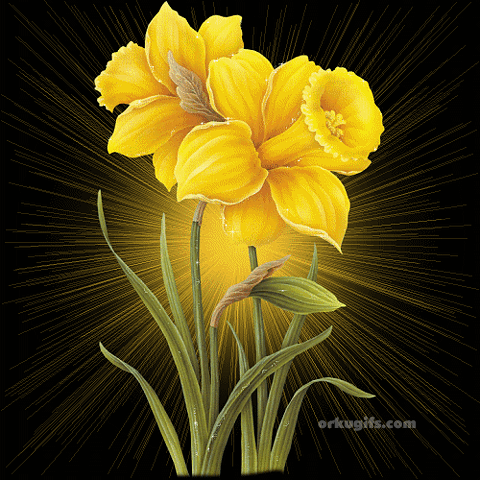

¡FELICEZ 21 MI REINA HERMOSA, NO FUISTE ESPECTADORA!
En este día donde las flores amarillas llenan el mundo de luz, quiero regalarte algo que vaya más allá del tiempo, algo que no se marchite y que, en su esencia, siempre conserve su brillo. Las flores amarillas son el reflejo de la alegría que siento cada vez que pienso en ti, la esperanza que encuentro en cada momento que compartimos y la energía que me impulsa a seguir adelante, sabiendo que siempre estás a mi lado. Hoy, en el Día de las Flores Amarillas, quiero que recuerdes que, aunque las flores de la naturaleza eventualmente se desvanecen, el amor que siento por ti es eterno, y por eso he diseñado esta flor especialmente para ti. Una flor que nunca perderá su color, su vida o su esencia, así como mi cariño por ti. Cada vez que la mires, quiero que sientas la promesa de este amor incondicional, que no conoce estaciones ni fin. En los días de sol o en los días nublados, que su color amarillo te recuerde que siempre hay luz, que siempre hay belleza, y que siempre hay un 'te amo' esperando por ti. El amarillo simboliza más que una simple tonalidad; es el color de la felicidad que me brindas, la esperanza que encuentro en tu sonrisa y la calidez que siento en tu presencia. Que esta flor especial te acompañe hoy y siempre, como un recordatorio de que, aunque el tiempo pase y las cosas cambien, mi amor por ti seguirá creciendo, floreciendo, eterno y brillante.
FELIZ CUMPLE MES MAMI
Para Nanin
¡Feliz Día mi reina hermosa!
TE AMO MAMI
¡El soñar de sueños gigantes!